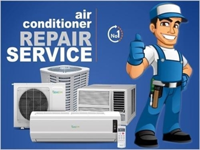
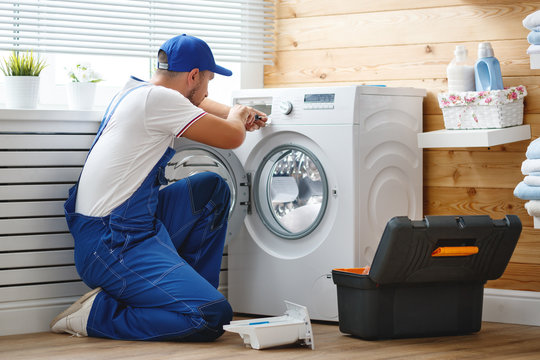
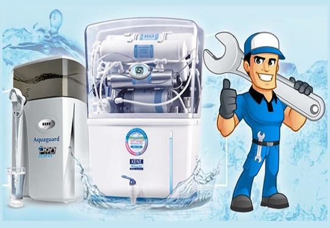

Trivedi Cooling Solution & RO Point, Lucknow is a trusted service provider offering reliable
AC repair, refrigerator repair, washing machine repair, RO service, Geyser,
and Microwave Oven at affordable prices.
5+
Team Members
25+
Projects Completed
92%
Client Satisfaction
400+
Happy Customers

AC cleaning Services
AC repair services Stay cool and comfortable with our AC repair services. We fix everything from compressor issues to low cooling efficiency.

Washing Machine Repair
Whether your washing machine is leaking, not draining, or simply not turning on, our team is equipped to handle all types of repairs for all major brands.
Refrigerator Services
From cooling issues to strange noises, we provide fast and effective solutions for your refrigerator problems, ensuring it functions at optimal performance.

RO Services
We provide expert RO water purifier repair, maintenance, and installation services to ensure you always have clean, safe, and healthy drinking water. Fast service, skilled technicians, and affordable rates – your water’s purity is our priority.